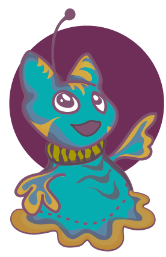
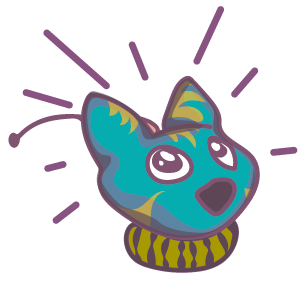
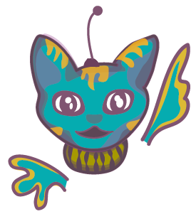
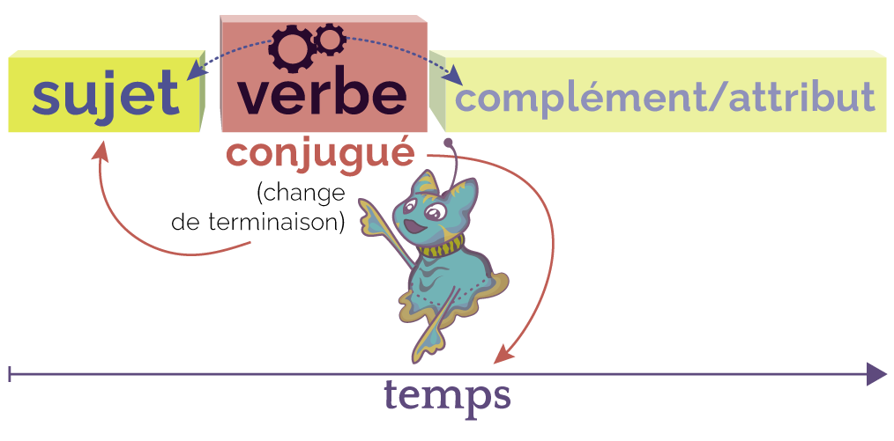

Qu'est-ce qu'un verbe ?
|  | Le verbe conjugué est le mot-noyau de la phrase.
|
Dans chacune des phrases suivantes, clique sur le verbe.
.
.
Maintenant, si tu changes le sujet de la phrase
« Blou mange une pomme rouge. »
par « nous », quelle phrase est bonne parmi les suivantes ?

→ La terminaison du verbe change selon son sujet.
Sais-tu quel est le temps des phrases suivantes ?

→ La terminaison du verbe change selon le temps de la phrase.
Pour identifier le verbe, tu peux changer le temps de la phrase ou le sujet.
Le verbe est le mot-noyau de la phrase : il indique le temps de la phrase et se conjugue avec le sujet.
Les rôles du verbe dans la phrase
Le verbe d'action
Un verbe peut exprimer une action
ou raconter un évènement.
– écrire, chanter, finir, naviguer, aller… –
Exemple :
Blou joue au ballon.
→ « joue » répond à la question
« que fait Blou ? »
→ « au ballon » est le complément du verbe
Le verbe d'état
Un verbe peut aussi exprimer un état.
– être, paraître, sembler, devenir, rester… –
Exemple :
Blou est triste.
→ « est » précise l'état du sujet « Blou »
→ « triste » est l'attribut du sujet
Le verbe conjugué
La terminaison du verbe varie en fonction du sujet, ainsi que du temps de conjugaison : passé, présent, futur.
1. En fonction du sujet
Exemple :
→ Tu manges une pomme rouge.
→ Nous mangeons une pomme verte.
→ Elles mangent une pomme jaune.
Pour identifier le sujet, on se demande de qui, ou de quoi on parle.
Exemple :
Blou regarde les nuages.
2. En fonction du temps
Le verbe se conjugue au présent, au passé et au futur.
Exemple :
Présent → Blou mange une pomme rouge.
Futur → Demain, Blou mangera une pomme rouge.
Passé → Hier, Blou mangeait une pomme rouge.
Le verbe peut être à la forme simple (formé d'un seul mot) ou à la forme composée (formé de deux mots avec un auxiliaire).
Exemple :
Tout à l'heure, Blou a mangé une pomme verte.